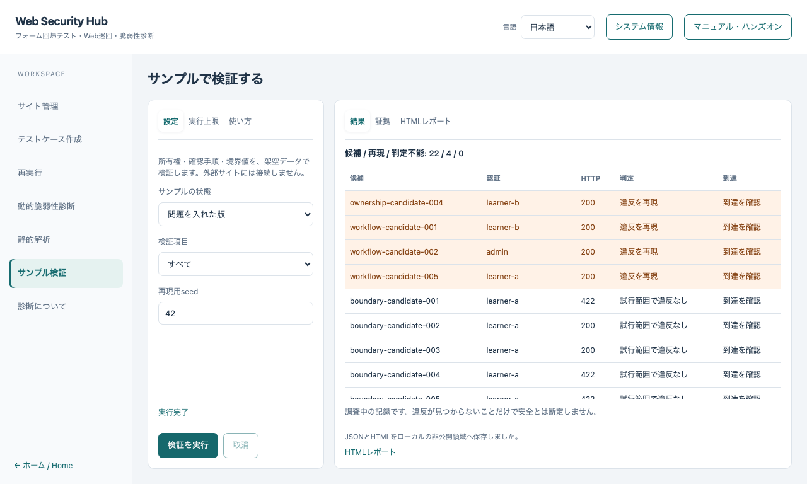

サンプル検証ハンズオン
English · 基本ハンズオン
このコースでは、架空のサンプルで「正常版→問題を入れた版→修正版」を比較します。
外部サイトへの接続、実データ、モデルやAPIキーの設定は不要です。
この開発ブランチの機能であり、公開済み1.3.0のインストーラーには含まれません。
1. 検証画面を開く
アプリの左側で サンプル検証 を選びます。この画面の対象は専用サンプルで、サイト管理で選択したサイトには接続しません。
「設定」「実行上限」「使い方」は左側、「結果」「証拠」は右側にあり、長い結果は領域内でスクロールします。
2. 正常版を確認する
サンプルの状態を 正常版、検証項目を すべて にして 検証を実行 を押します。
通常の設定では22候補を実行し、違反の再現は0件です。正常対照も含めると44試行になります。
「試行範囲で違反なし」は、その試行で確認した結果です。安全性の証明や正式なVEX判定ではありません。
3. 問題を入れた版と比較する
状態を 問題を入れた版 に変更して、もう一度実行します。
既知の4件が再現され、該当する行が上に表示されます。

| 検証項目 |
確認する内容 |
| 境界値・Unicode |
人数の範囲、文字数、Unicode正規化、項目の欠落 |
| 所有権 |
本人A・別人B・管理者・未認証で同じ架空レコードにアクセス |
| 確認から完了への遷移 |
確認済みの正常対照と、確認を省略した実行の比較 |
HTTP 200だけで違反と判断することはありません。サーバー側の記録、認証、実行ソース、応答や実際の更新を照合します。
4. 証拠とレポートを参照する
結果の行をクリック、またはキーボードで選択してEnterを押すと、対応する 証拠 を表示します。
証拠には試行ID・認証profile・到達状態・ソースdigestが含まれます。Cookieやパスワードは含めません。
HTMLレポート で、保存済みの日英レポートを実行画面内に表示できます。JSONとHTMLはアプリの非公開データ領域にも保存されます。
5. 修正版・取消・上限を確認する
- 修正版 を実行すると、違反の再現は0件に戻ります。
- 実行中は 取消 を押せます。完了した分は部分結果として保存されます。
- 「実行上限」では候補数・正常対照込みの試行数・時間を制限できます。上限に達した実行は実行完了と区別します。
- マニュアル・ハンズオン は実行画面から開けます。閉じると元の入力や結果へ戻れます。
候補の再現用seedが同じなら、同じ設定・コードで候補と順序を再現できます。未計測・ソース不一致・正常対照の失敗は判定不能として扱います。
CLIでも同じ検証を実行する
npm run verifier:run -- --mode baseline
npm run verifier:run -- --mode changed
npm run verifier:run -- --mode fixed
ソース版では依存関係の導入が必要です。通常のアプリ操作にコマンドは不要です。